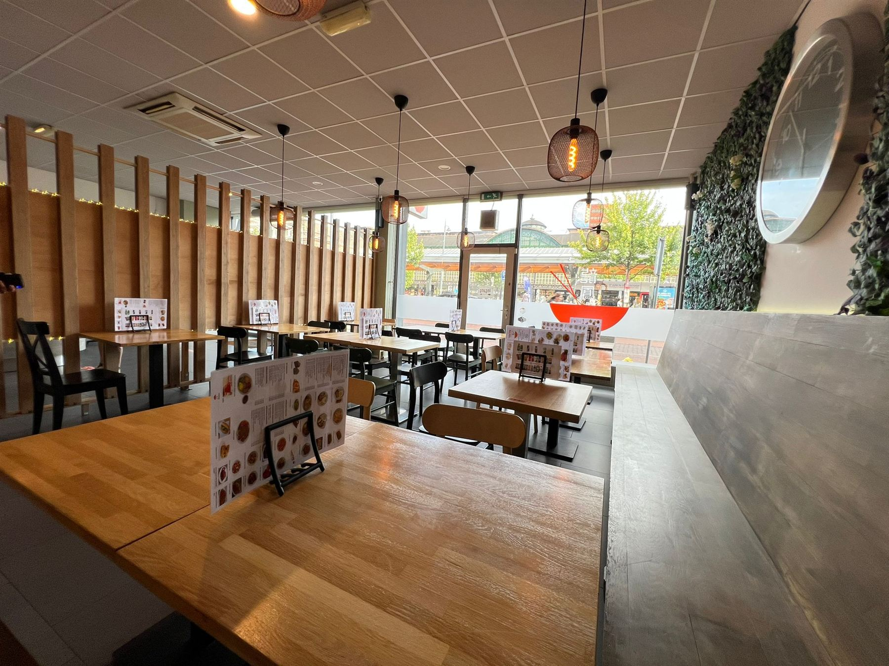
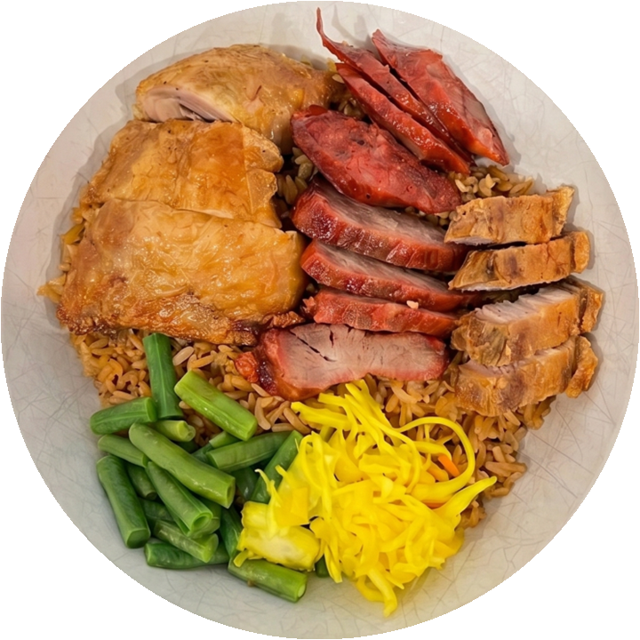
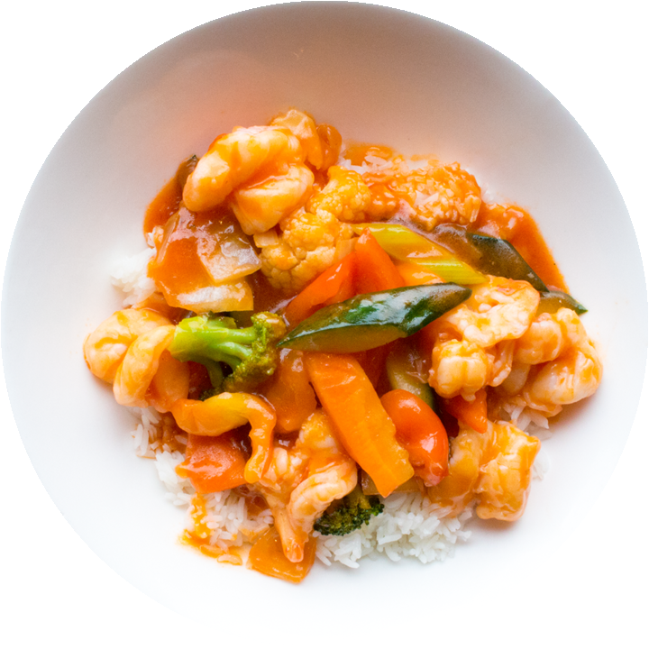
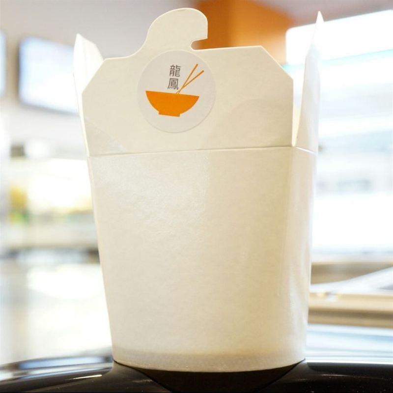
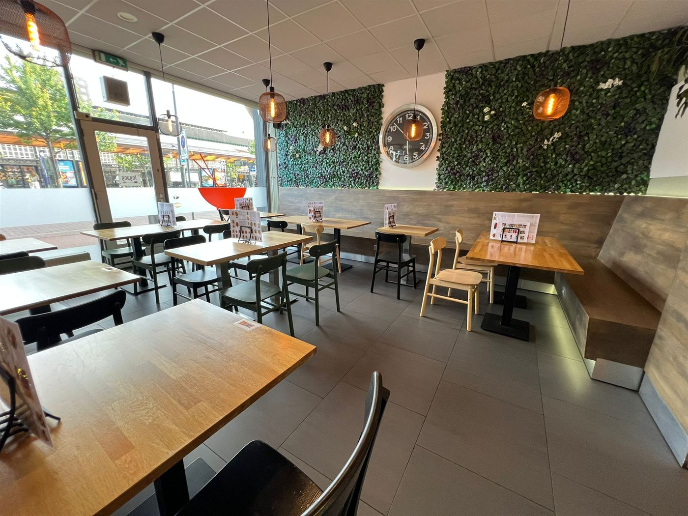
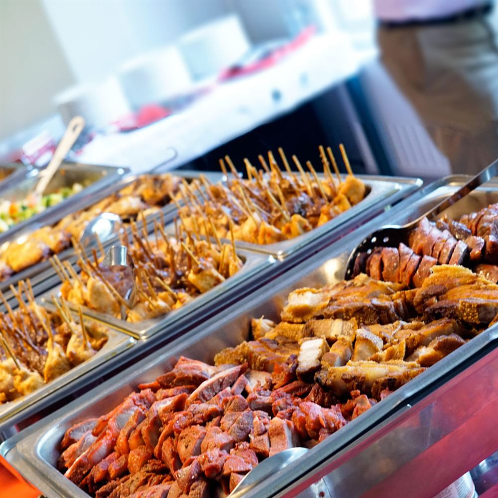
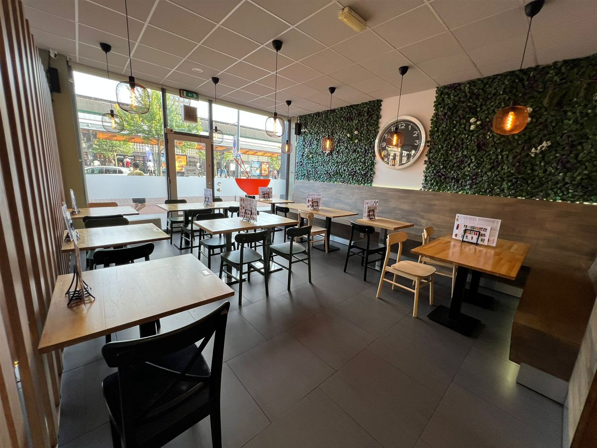

Sinds 1974
Lung Fung
Chinees-Surinaams eten in Den Haag. Aan tafel, om mee te nemen of thuisbezorgd.
Stationsplein 3A, tegenover Holland Spoor

Het restaurant van Den Haag voor al uw Chinees-Surinaamse gerechten.
- Aan tafelRustig lunchen of dineren in onze zaak aan het Stationsplein.
- AfhalenKom langs of bestel telefonisch.
- BezorgenVia Lung Fung zelf, Thuisbezorgd of Uber Eats.
- CateringVoor uw speciale gelegenheden.
Populaire gerechten

Afhaalkaart
Alle hoofdgerechten zijn inclusief witte rijst. In plaats van witte rijst: nasi goreng of bami goreng 2,00 extra, bruine nasi of bami 2,00 extra, mihoen goreng 3,00 extra.
Wij hanteren deze prijzen ook in het restaurant. Niet alle restaurantgerechten zijn beschikbaar voor afhaal.
Het restaurant behoudt zich het recht voor op de definitieve interpretatie van deze kaart. Liever de originele prijslijst? Open de PDF.

Afhalen & bezorgen
Afhalen
Liever gelijk bestellen en dan afhalen? Bel ons of kom langs aan het Stationsplein, tegenover Holland Spoor.
Bezorgen
Wij werken samen met Thuisbezorgd en Uber Eats om u de perfecte bezorgervaring te geven. Zoek daar op Lung Fung Den Haag.
Grote bestellingen
Een bestelling van meer dan € 300? Dat kan! Die bezorgen wij persoonlijk. Neem hiervoor telefonisch contact met ons op.
Catering
Sinds 2020 verzorgen wij ook catering voor uw speciale gelegenheden. Bel of mail ons voor de mogelijkheden.
Waar het allemaal is begonnen
Lung Fung is al generaties lang een familiebedrijf, met wortels in China en Suriname. Inmiddels staat de vierde generatie aan het roer.
-
1974
Prinsegracht
De eerste locatie opent aan de Prinsegracht, op de hoek van de Boekhorststraat in het centrum van Den Haag. Door de migratiestroom van Suriname naar Nederland ontstond er vraag naar Chinees-Surinaams eten. Gezien onze wortels in China en Suriname hebben wij die markt omarmd.
-
1992
Stationsplein
Een tweede filiaal opent op het Stationsplein, tegenover Holland Spoor. Hier zijn we nu permanent gehuisvest. Eerst vooral voor de snelle hap, vanwege de drukte rond Holland Spoor; tegenwoordig kunt u ook rustig bij ons lunchen of dineren.
-
2020
Bij u thuis
We beginnen met bezorgen aan huis en het verzorgen van catering, om het lekkere eten dichter bij u te brengen. Bestel eens een tjauw min moksi en geniet lekker vanaf de bank.
Ons restaurant
Lange houten tafels, koperen lampen en een groene plantenwand. Met uitzicht op Holland Spoor.



Wat gasten zeggen
Heerlijke bami moksie metie. Het vlees is perfect bereid, vooral het knapperige spek, en de bami is goed op smaak.
Every time I come here it's nice food. You start craving it after a while and it's amazing every time.
De bediening was goed, het eten was heerlijk en ik kreeg mijn reservering erg snel.
Langskomen of bellen
Stationsplein 3A2515 BT Den Haag
Tegenover station Holland Spoor
070 388 92 99
info@lungfung.nl
Openingstijden
| Maandag | 11:30 tot 21:00 |
|---|---|
| Dinsdag | 11:30 tot 21:00 |
| Woensdag | 11:30 tot 21:00 |
| Donderdag | 11:30 tot 21:00 |
| Vrijdag | 11:30 tot 21:00 |
| Zaterdag | 12:00 tot 21:00 |
| Zondag | gesloten |